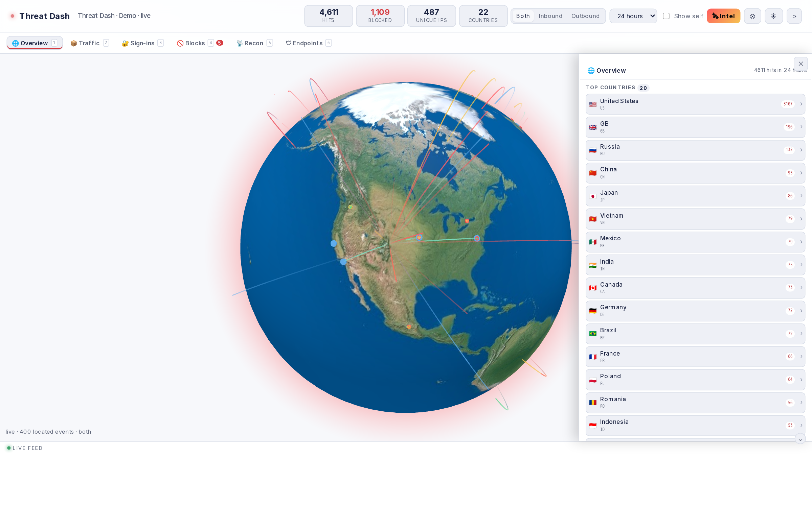
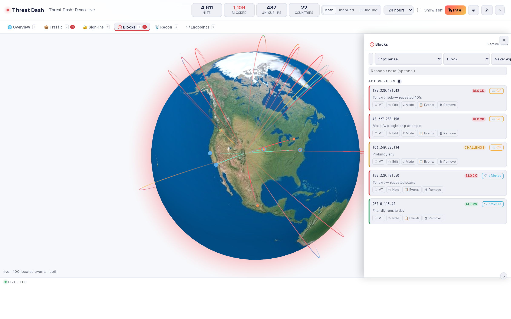
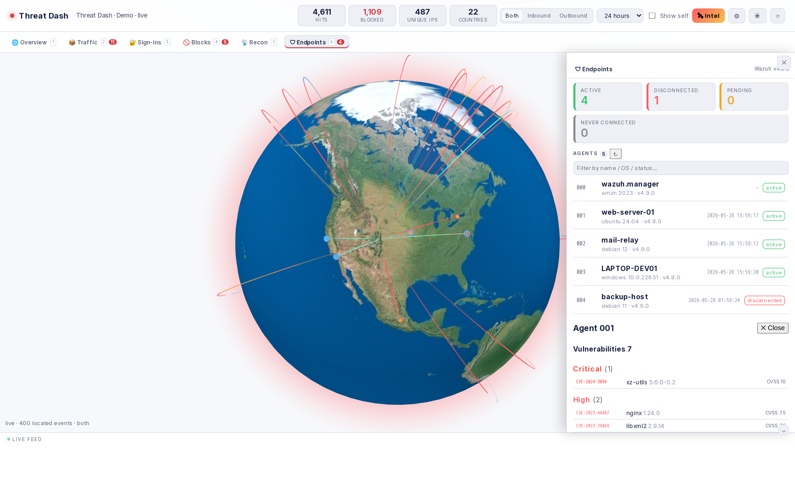

Open source · MIT
Maintained
threat-dash
// self-hosted security console for the homelab era
A single-container security dashboard that shows who's attacking you, where your containers are reaching out, and lets you shut bad actors down at the edge — all in one pane of glass. Built from scratch with the Python standard library and just two dependencies.
- Live 3D threat map (globe.gl) plotting attack sources in real time
- Cloudflare analytics: traffic, WAF blocks, top countries & offending IPs
- pfSense + Wazuh integrations for firewall and endpoint/SIEM visibility
- Outbound intel & IOC enrichment — see where workloads phone home
- One-click edge blocking; pluggable backend client architecture
PythonDockerSQLite
globe.glCloudflare API
Wazuh APIREST


